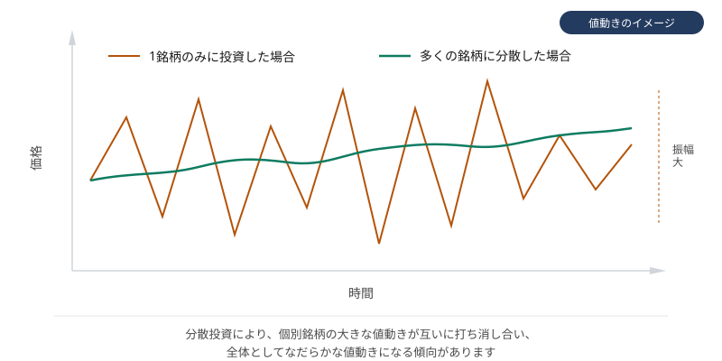

リスクと分散
このページで学ぶこと
- 投資における「リスク」の意味
- 主なリスクの種類
- 分散投資の考え方と限界
- ポートフォリオの基本概念
- リスク許容度の考え方
投資における「リスク」とは
日常用語では「リスク = 危険」という意味で使われますが、投資の世界では「リスク = リターンの不確実性（ばらつき）」を意味します。つまり、リスクが高いとは、リターンが大きく上振れする可能性も大きく下振れする可能性もある、ということです。
リスクとリターンは一般的にトレードオフの関係にあります。高いリターンを期待するためには、高いリスクを受け入れる必要があり、リスクを低く抑えればリターンも控えめになる傾向があります。
主なリスクの種類
| リスクの種類 | 内容 | 例 |
|---|---|---|
| 価格変動リスク | 株価や基準価額が変動するリスク | 株式市場の暴落でファンドの価値が下落 |
| 為替リスク | 為替レートの変動で円換算の価値が変わるリスク | 円高になると外国資産の円換算額が減少 |
| 金利変動リスク | 金利の変動により資産価値が変わるリスク | 金利上昇で債券価格が下落 |
| 信用リスク | 発行体が利払いや元本返済をできなくなるリスク | 社債の発行企業が経営破綻 |
| 流動性リスク | 売りたいときに適正な価格で売れないリスク | 出来高の少ない銘柄で大量に売却しようとすると価格が大きく下がる |
| インフレリスク | 物価上昇により実質的な資産価値が目減りするリスク | 預金金利よりもインフレ率が高いと実質的に損失 |
| カントリーリスク | 投資先の国の政治・経済状況の変化によるリスク | 新興国の政情不安により資産価値が下落 |
分散投資の考え方
分散投資とは、投資先を複数の資産・銘柄・地域・時間に分けることで、特定のリスク要因の影響を軽減しようとする考え方です。
分散の軸
- 資産クラスの分散: 株式、債券、不動産（REIT）、現金など異なる資産に分散
- 地域の分散: 日本、米国、欧州、新興国など複数の地域に分散
- 銘柄の分散: 特定の企業に集中せず、複数の銘柄に分散
- 時間の分散: 一度にまとめて投資せず、時間をずらして投資する（ドルコスト平均法など）
分散投資の限界
分散投資はリスクを軽減する有効な手段ですが、万能ではありません。
- 世界的な金融危機のように、すべての資産が同時に下落する局面では分散の効果が限定的になる
- 分散しすぎるとリターンが市場平均に近づき、個別銘柄で大きなリターンを得る機会が失われる
- 分散は「リスクの軽減」であり「リスクの排除」ではない
システマティックリスクと非システマティックリスク
リスクは大きく2種類に分けられます。市場全体に影響する「システマティックリスク」（市場リスク）は分散投資で排除できません。一方、個別企業固有の「非システマティックリスク」は、十分な銘柄分散によって軽減できます。
図：分散投資の効果

分散投資により値動きがなだらかになる傾向があります（値動きのイメージです）
ポートフォリオとは
ポートフォリオとは、投資家が保有する金融資産の組み合わせ全体を指します。どの資産にどのくらいの割合で投資するか（資産配分 / アセットアロケーション）が、投資の成果に大きな影響を与えるとされています。
資産配分の考え方
資産配分を決める際に考慮すべき要素には、以下のようなものがあります。
- 投資目的: 何のために投資するのか（老後資金、住宅購入、教育資金など）
- 投資期間: いつまでに資金が必要か
- リスク許容度: どの程度の損失まで許容できるか
- 年齢: 一般的に若いほどリスクを取りやすいとされる（投資期間が長いため）
- 他の収入源・資産: 投資以外の収入や資産の状況
当サイトでは特定のポートフォリオを推奨しません
最適な資産配分は個人の状況によって異なります。当サイトでは「この配分が正解」という特定のポートフォリオを推奨することはしません。資産配分について詳しく知りたい場合は、ファイナンシャルプランナーなどの専門家に相談することをおすすめします。
リスク許容度の考え方
リスク許容度とは、投資家がどの程度の損失や価格変動を受け入れられるかの度合いです。リスク許容度は人によって異なり、以下のような要因に影響されます。
- 年齢と投資期間: 若くて投資期間が長いほど、短期の下落を回復する時間がある
- 収入の安定性: 安定した収入がある場合、投資の損失を許容しやすい
- 生活防衛資金: 生活費の数ヶ月〜1年分の現金を確保していれば、投資でリスクを取りやすい
- 心理的な耐性: 投資額が大きく下落したときに冷静でいられるか
生活防衛資金について
投資を始める前に、まず生活費の数ヶ月分（一般的には3〜6ヶ月分、人によってはそれ以上）を普通預金などのすぐに使える形で確保しておくことが重要です。生活防衛資金は投資に回すべきではありません。この金額は個人の状況（家族構成、収入の安定性、固定費の大きさなど）によって異なります。
よくある誤解
分散投資は非システマティックリスク（個別銘柄固有のリスク）を軽減できますが、システマティックリスク（市場全体のリスク）は分散では排除できません。金融危機のように市場全体が下落する場面では、どれだけ分散していても損失が生じます。
リスクとリターンはトレードオフの関係にあります。リスクを極端に低くすればリターンも低くなります。大切なのは、自分のリスク許容度に合った水準でリスクを取ることであり、リスクが低いほど良いというわけではありません。
若いほど投資期間が長く、短期の下落を回復する時間があるのは事実ですが、「若い = リスクをたくさん取るべき」とは限りません。収入の安定性、生活防衛資金の有無、心理的な耐性など、年齢以外の要因も重要です。無理なリスクを取ると、暴落時にパニック売りをしてしまう可能性があります。
理解度チェック
Q1. 投資における「リスク」の意味として最も適切なものはどれですか?
Q2. 分散投資で軽減できるリスクはどれですか?
Q3. リスク許容度に影響する要因として適切でないものはどれですか?